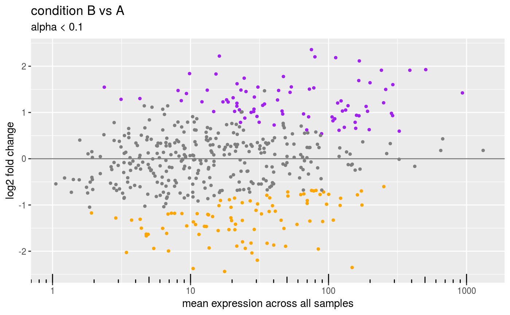
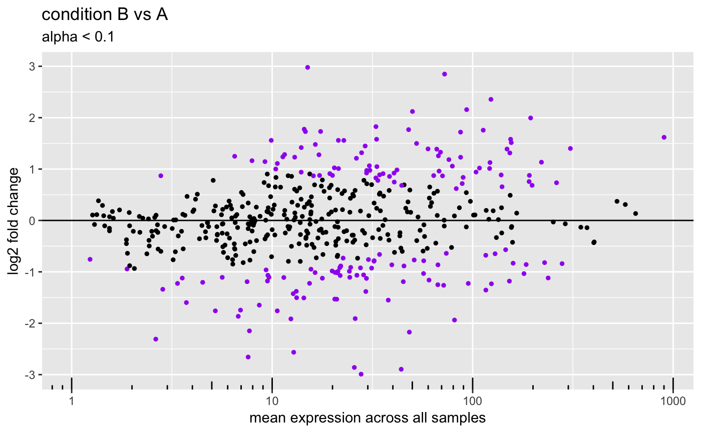
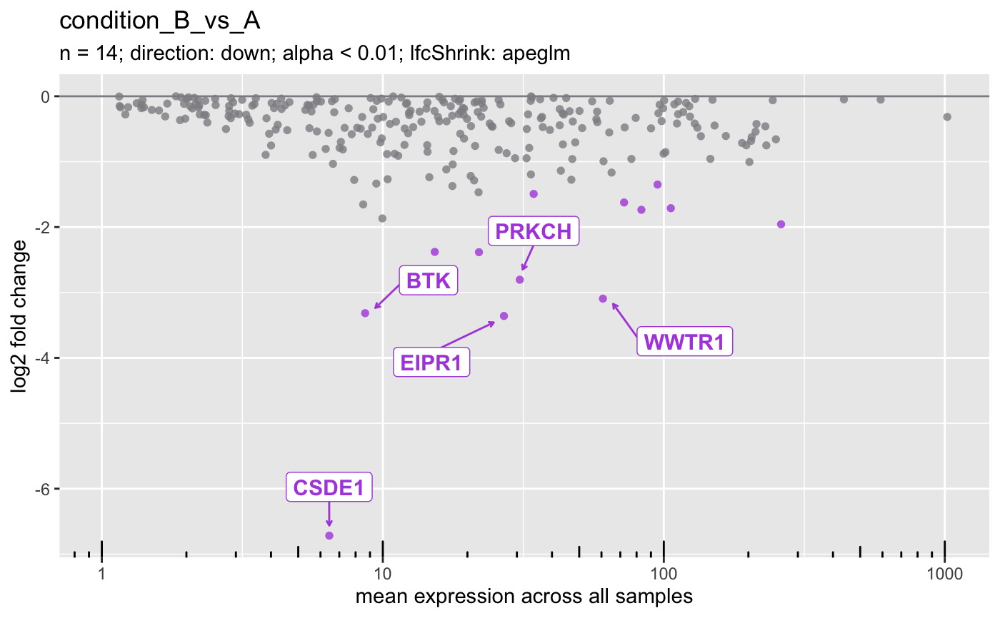
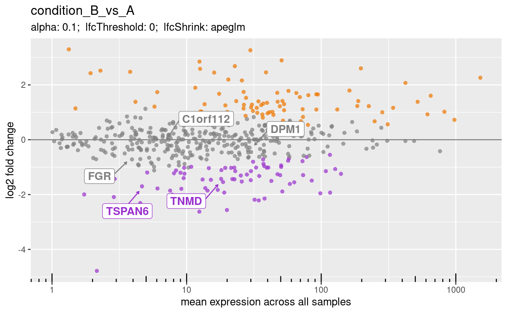
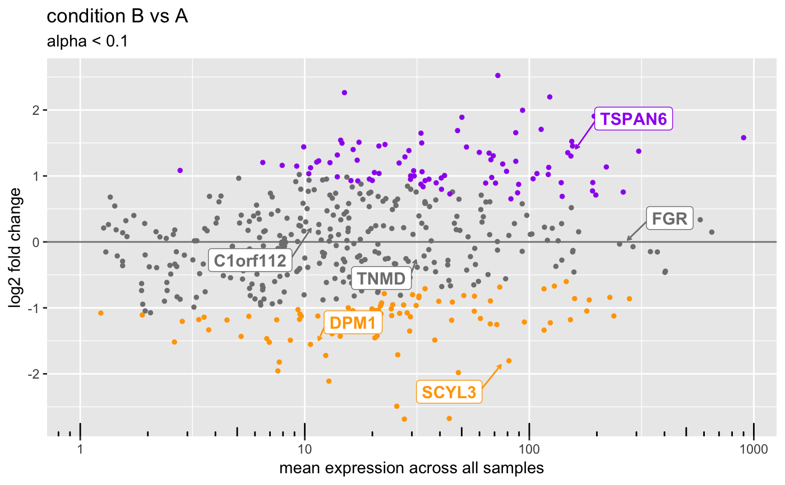

MA-plot: plot differences versus averages for high-throughput data
Source:R/plotMA-methods.R
plotMA.RdA generic function which produces an MA-plot for an object containing microarray, RNA-Seq or other data.
# S4 method for DESeqResults plotMA(object, genes = NULL, gene2symbol = NULL, ntop = 0L, direction = c("both", "up", "down"), pointColor = "gray50", sigPointColor = c(upregulated = "purple", downregulated = "orange"), return = c("ggplot", "DataFrame")) # S4 method for DESeqAnalysis plotMA(object, results = 1L, lfcShrink = TRUE, genes = NULL, ntop = 0L, direction = c("both", "up", "down"), pointColor = "gray50", sigPointColor = c(upregulated = "purple", downregulated = "orange"), return = c("ggplot", "DataFrame"))
Arguments
| object | A data object, typically containing count values from an RNA-Seq experiment or microarray intensity values. |
|---|---|
| genes |
|
| gene2symbol |
|
| ntop |
|
| direction |
|
| pointColor |
|
| sigPointColor |
|
| return |
|
| results |
|
| lfcShrink |
|
| ... | Additional arguments, for use in specific methods. |
Value
ggplot.
Details
An MA plot is an application of a Bland–Altman plot for visual representation of genomic data. The plot visualizes the differences between measurements taken in two samples, by transforming the data onto M (log ratio) and A (mean average) scales, then plotting these values.
Note
We are not allowing post hoc alpha or lfcThreshold cutoffs here.
See also
Examples
data(deseq) ## Get genes from DESeqDataSet. dds <- as(deseq, "DESeqDataSet") genes <- head(rownames(dds)) print(genes)#> [1] "gene001" "gene002" "gene003" "gene004" "gene005" "gene006"## DESeqAnalysis ==== plotMA(deseq)#>## Customize the colors. plotMA( object = deseq, pointColor = "black", sigPointColor = "purple" )#>#>## Directional support (up or down). plotMA(deseq, direction = "up", ntop = 5L)#>plotMA(deseq, direction = "down", ntop = 5L)#>## Label genes manually. ## Note that either gene IDs or names (symbols) are supported. plotMA(deseq, genes = genes)#>